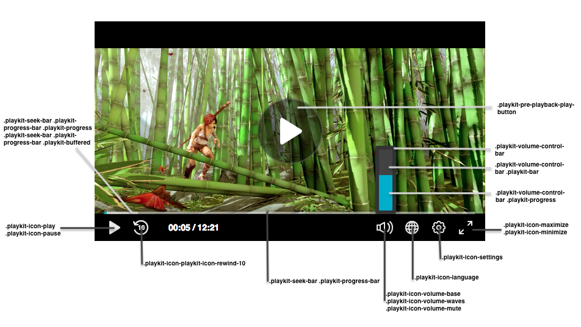

Player CSS for Web
Updated: Tue Jul 30 02:08:55 2019, By Contribute to this page
The Player user interface (UI) is created using HTML and CSS, which means that you can edit the UI according to your needs; for example, by changing the color of the scrubber, setting the text font family, or changing the control icons, etc.
This demo demonstrates an example of customizing the UI using the CSS.
These are some of the classes you can override:

Things To Note
- The namespace for the default skin must be
playkit. - The Player uses the same font family in all of its components. You can override it in the general parent class (
.playkit-player-gui) or customize each component according to your preferences.
Player Classes List
Here’s a list of the Player classes you can customize:
Buttons
| Class Name | Description |
|---|---|
.playkit-pre-playback-play-button |
The background of the play button, before the Player begins playing |
.playkit-icon-play |
The Player icon, which is used in the bottom controllers and on the Player itself |
.playkit-icon-start-over |
Start-over icon, shown at the end of the video |
.playkit-control-button |
This is a class that’s attached to all of the buttons in the control container, so a change here will affect all of the buttons. |
.playkit-icon-pause |
Pause icon |
.playkit-icon-playkit-icon-rewind-10 |
Rewind icon |
.playkit-icon-volume-base |
The left side of the volume icon |
.playkit-icon-volume-waves |
Shown when not on mute |
.playkit-icon-volume-mute |
Shown when the Player is muted |
.playkit-icon-language |
Languages selection icon |
.playkit-icon-settings |
Settings icon |
.playkit-icon-maximize |
Maximize icon |
.playkit-icon-minimize |
Minimize icon |
Volume and Seek Bar
| Class Name | Description |
|---|---|
.playkit-volume-control-bar |
Placeholder for the volume level, use transform: rotate(90deg); for a horizontal volume bar. See Demo for usage example. |
.playkit-volume-control-bar .playkit-bar |
The level background |
.playkit-volume-control-bar .playkit-progress |
Indicates the audio level |
.playkit-seek-bar |
Placeholder for the Player seek bar |
.playkit-seek-bar .playkit-progress-bar |
Placeholder for the actual progress bar |
.playkit-seek-bar .playkit-progress-bar .playkit-progress |
Indicates the progress of the video/audio |
.playkit-seek-bar .playkit-progress-bar .playkit-progress .playkit-scrubber |
Indicates the end of the progress bar. When hovering over the seek bar, it will indicate the current position of the mouse on the seek bar |
.playkit-seek-bar .playkit-progress-bar .playkit-virtual-progress |
When hovering and seeking to a future part of the media, this will show the progress until this point |
.playkit-seek-bar .playkit-progress-bar .playkit-time-preview |
When hovering on the seek bar, this will show the current mouse position time |
Overlays
| Class Name | Description |
|---|---|
.playkit-bottom-bar |
Placeholder of all the bottom controllers |
.playkit-overlay .playkit-overlay-contents |
Overlays container, for advanced captions settings (for example) |
.playkit-overlay .playkit-error-overlay |
Overlay that pops up when there’s an error |
Spinner
| Class name | Description |
|---|---|
.playkit-spinner |
The spinner implementation, which consists of several span child elements that you can remove using: .playkit-spinner span{ display: none;} |